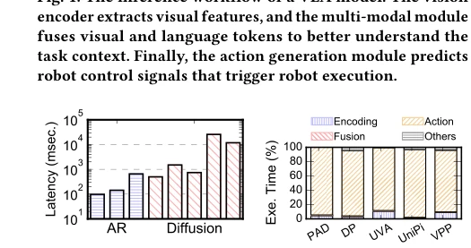
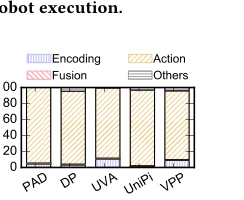
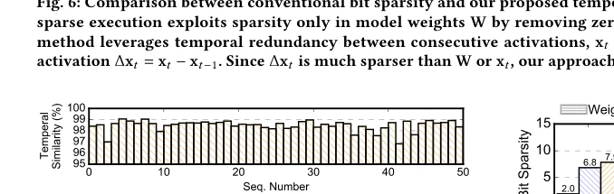
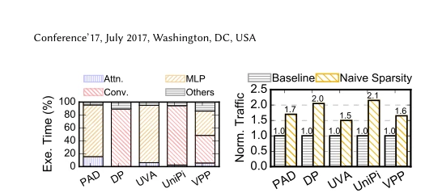
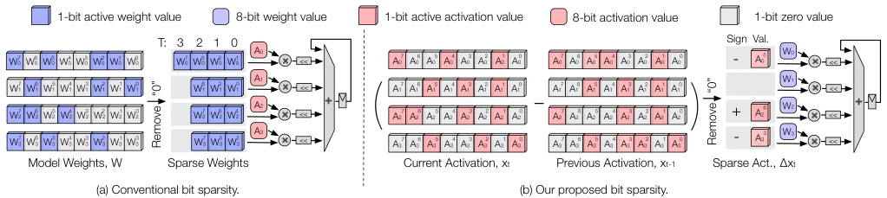
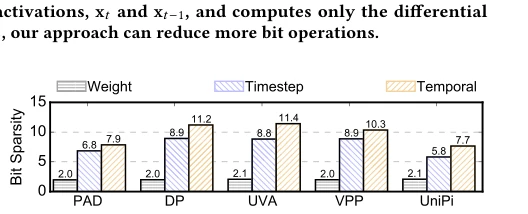
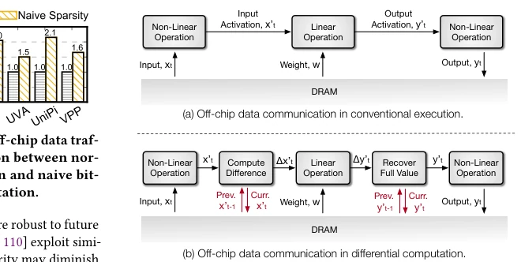
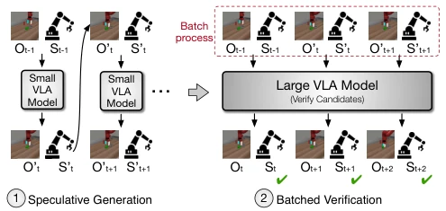
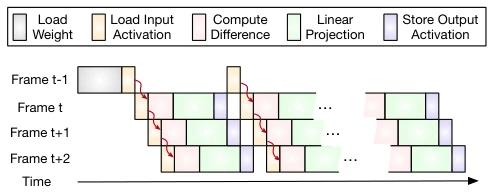
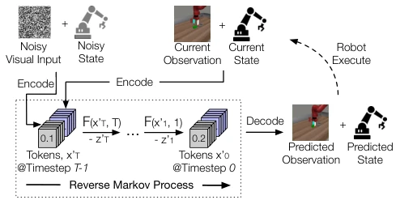

The name 'Deltoris' is quite dramatic, combining Delta (differential) and Dolores from Westworld, implying that robots will awaken and learn to 'slack off'. The core logic of this paper is actually quite straightforward: since robot action frequency is high and visual changes are small, why recalculate every time? It employs an algorithm-hardware co-design, using differential computing to save compute power and speculative inference to save memory. Although it sounds promising, applying 'speculation' to robot control raises questions: if a guess is wrong and causes the robot to hit a wall, who bears the responsibility? Moreover, it excludes the self-attention mechanism from differential optimization; although the rationale is sufficient (small proportion), it feels somewhat suspicious of 'picking up sesame seeds and losing watermelons'. However, the 34.2x speedup is indeed eye-opening, serving as a lifeline for real-time control on edge devices. It remains unknown whether in extreme dynamic scenarios, this 'differential' strategy might lead to control failure due to cumulative error, after all, robots are not static images; if they move too fast, differential computation may become insufficient.
Vision-Language-Action (VLA) models in Embodied AI, especially diffusion-based models, although capable of generating smooth and highly generalizable action trajectories, face severe real-time challenges. Existing diffusion models require dozens of iterations for denoising, resulting in huge computational load, with latency far higher than autoregressive (AR) models. For example, the PAD model achieves only 2.0 Hz on Nvidia Orin SoC, far below the 50-200 Hz required for robot control [26]. Roofline analysis shows these models are mainly limited by compute capability (compute-bound), not memory bandwidth [12, 20, 26, 36, 53]. However, existing acceleration technologies mostly focus on LLM quantization or KV cache compression, paying insufficient attention to VLA models. More critically, existing methods ignore the extremely high temporal similarity between adjacent frames in robot control. Experiments show that over 98% of pixels remain unchanged between consecutive frames, meaning a large amount of computation is redundant. Without exploiting this temporal redundancy, existing diffusion VLA models struggle to achieve real-time inference on resource-constrained edge devices, limiting their deployment on real robot platforms.

Fig. 2: End-to-end latency of various VLA models. We com- pare diffusion-based VLA [12, 20, 26, 36, 53] and autoregres- sive (AR)-based [44, 88, 91].

Fig. 3: Execution breakdown of diffusion-based VLA mod- els [12, 20, 26, 36, 53]. Diffu- sion action prediction domi- nates the execution.

Fig. 7: Temporal similarity of adjacent frames in the VLA dataset, PushT [27].

Fig. 9: The execution break- down of VLA models. Self- attention does not dominate the execution.
方法Method
Deltoris提出了一套算法与硬件协同设计的框架，旨在加速基于扩散的VLA推理。整体流程分为三个核心阶段：差分计算、投机验证和专用硬件加速。首先，算法层面提出“时序感知位级稀疏”（Temporal-aware bit-level sparsity）。利用机器人控制的高频特性，相邻时刻的输入（如图像、状态）高度相似。该方法不重新计算全量输入，而是计算差分激活值Δx_t = x_t - x_{t-1}，仅对差分后的稀疏比特进行位级串行计算，从而大幅减少算术操作（最高减少92.9%）。针对差分计算带来的额外片外数据流量问题，引入“投机推理”（Speculative Inference）机制：先用轻量级小模型生成多个未来动作的投机候选，再用大模型批量验证这些候选。通过批量验证，大模型的权重和中间激活只需加载一次即可复用多次，有效摊销了数据搬运开销。硬件层面，设计了专用的1D脉动阵列（Systolic PE array）和输出静止（Output-stationary）数据流，消除了传统位级稀疏加速器中常见的负载不均衡问题，并配合编解码模块进一步降低片内外数据移动。
Deltoris proposes a framework for algorithm and hardware co-design, aimed at accelerating diffusion-based VLA inference. The overall process is divided into three core stages: differential computing, speculative verification, and dedicated hardware acceleration. First, at the algorithm level, it proposes 'Temporal-aware bit-level sparsity'. Leveraging the high-frequency characteristics of robot control, inputs at adjacent moments (e.g., images, states) are highly similar. This method does not recalculate full input, but computes differential activation values Δx_t = x_t - x_{t-1}, only performing bit-level serial computation on the sparse bits after differential, thereby significantly reducing arithmetic operations (up to 92.9% reduction). Addressing the extra off-chip data traffic problem brought by differential computing, it introduces a 'Speculative Inference' mechanism: first, a lightweight small model generates multiple speculative candidates for future actions, then a large model batch verifies these candidates. Through batch verification, the large model's weights and intermediate activations only need to be loaded once to be reused multiple times, effectively amortizing data movement overhead. At the hardware level, a dedicated 1D systolic PE array and output-stationary dataflow are designed, eliminating the common load imbalance problem in traditional bit-level sparse accelerators, and cooperating with codec modules to further reduce off-chip data movement.

Fig. 6: Comparison between conventional bit sparsity and our proposed temporal-aware bit sparsity. Left: conventional bit- sparse execution exploits sparsity only in model weights W by removing zero-valued bits before computation. Right: our method leverages temporal redundancy between consecutive activations, x𝑡and x𝑡−1, and computes only the differential activation Δx𝑡= x𝑡−x𝑡−1. Since Δx𝑡is much sparser than W or x𝑡, our approach can reduce more bit operations.

Fig. 8: Bit-level sparsity comparison across different diffusion-based VLA models. Bit sparsity is defined as the ratio of the total number of bits to active bits, i.e., ones.

Fig. 11: Comparison of off-chip data traffic in (a) conventional execution and (b) naively applying our temporal-aware bit sparsity. In this naive sparse execution, extra data traffic is required to accommodate non-linear operations.

Fig. 12: Overview of our technique, speculative inference. It first allows a lightweight VLA model to generate a sequence of speculative candidates for future steps. These candidates are then verified together by a more accurate VLA model in a batched manner. Thus, we can amortize the data traffic of weight and activation accesses across verified candidates.

Fig. 13: Illustration of batched verification in speculative inference. Multiple speculative frames are verified together by the large VLA model, allowing the same model weights and activations to be loaded once and reused multiple times.
The authors evaluated on three widely used VLA models (Diffusion Policy, PAD, UVA, etc.), datasets include PushT, etc. Baseline comparisons include mobile GPU (Nvidia Orin) and existing dedicated accelerators. Evaluation metrics mainly focus on end-to-end latency, speedup, energy consumption, and task success rate (Accuracy). Experimental results show that, under the premise of keeping task success rate basically unchanged (minimal accuracy loss), it achieved a speedup of up to 34.2x compared to mobile GPU, and a 6.1x speedup compared to existing dedicated accelerators, with energy consumption reduction reaching 822x. Ablation experiments show that temporal-aware bit-level sparsity is key to reducing computation, while speculative inference effectively solves the memory bandwidth bottleneck triggered thereby. Additionally, the study found that the self-attention mechanism accounts for a small proportion in diffusion VLA (about 5.9%), therefore not performing differential optimization on it has a negligible impact on overall performance, validating the rationality of the design decision.
其他图片Other Figures

Fig. 4: The diffusion process in a diffusion-based VLA model. The noisy inputs and current observations are first encoded into the latent space. Then, the tokens go through 𝑇steps of a noising removal process to generate the predicted observa- tion and state, which are then used for action generation.